From Coding Assistance to Agentic Engineering
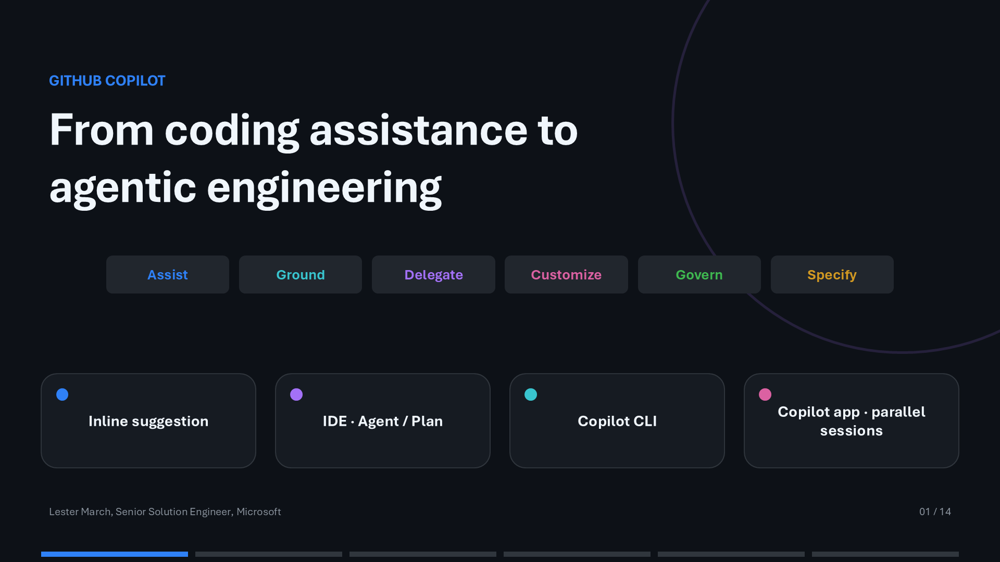
The learning journey covers Assist, Ground, Delegate, Customize, Govern, and Specify.
Where are you today?
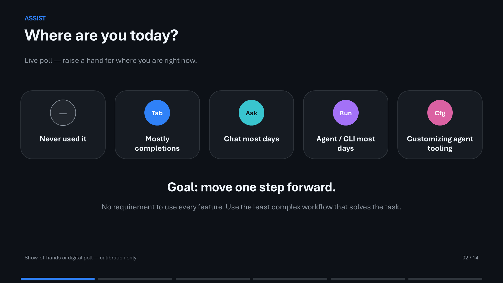
The goal is to move one step forward, using the least complex workflow that solves the task.
One product, three capability layers
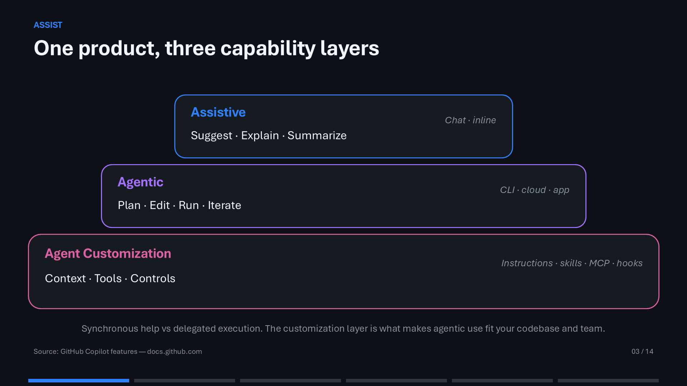
Assistive experiences suggest and explain, agents plan and execute, and customization supplies context, tools, and controls.
Which model? Start with Auto
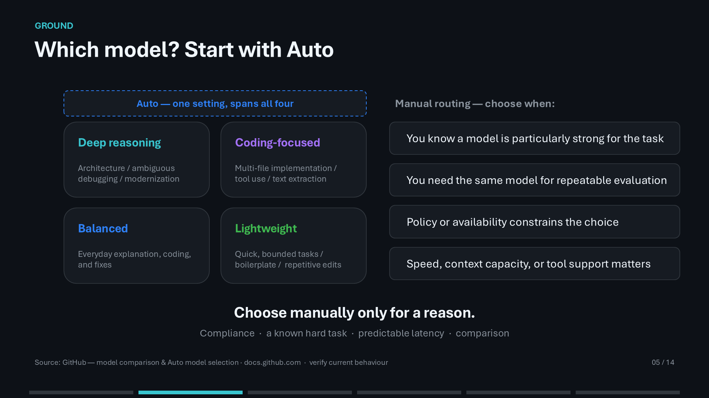
Manual selection is useful for known hard tasks, repeatability, policy, latency, context, or tool support.
Choose the surface by where work should happen
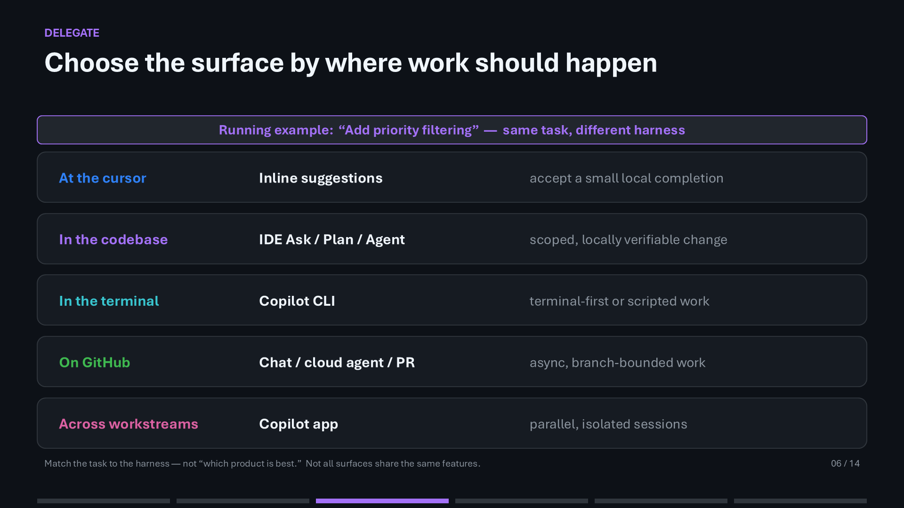
Choose the surface based on where the work should happen, not which product appears most capable.
Better prompts are better task definitions
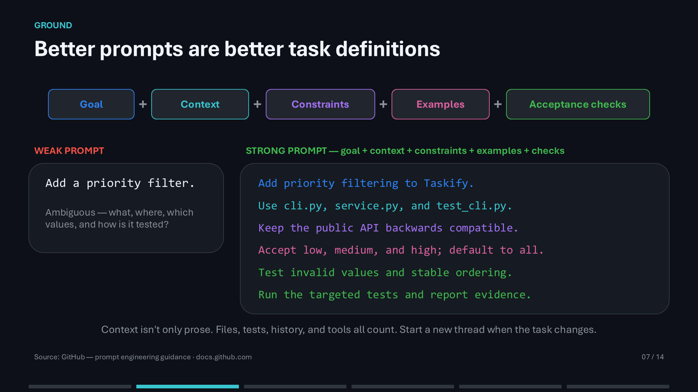
Better prompts are better task definitions grounded in files, tests, history, and tools.
Context shortcuts worth learning
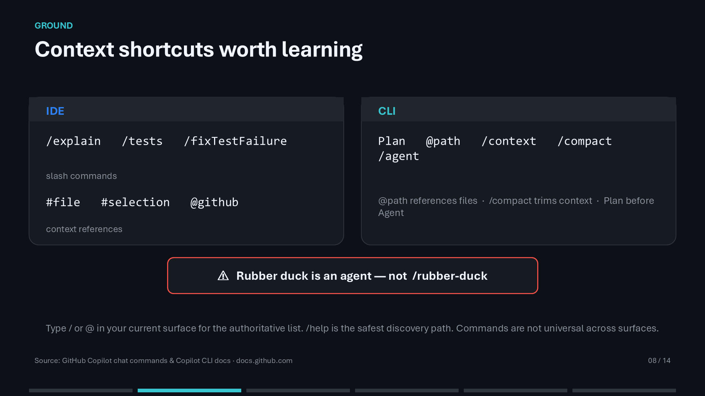
Commands vary between surfaces; slash, at-sign, and help discovery are authoritative.
The customization ladder
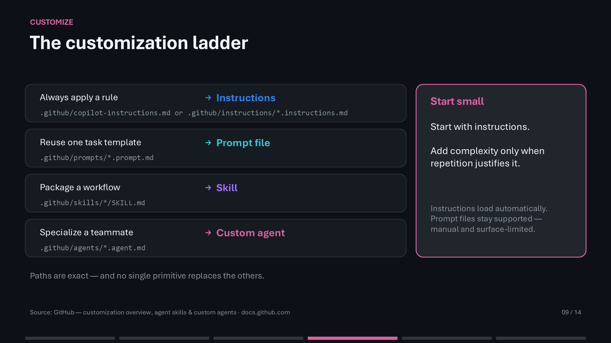
Start with instructions and add complexity only when repeated work justifies it.
Autonomy is a dial
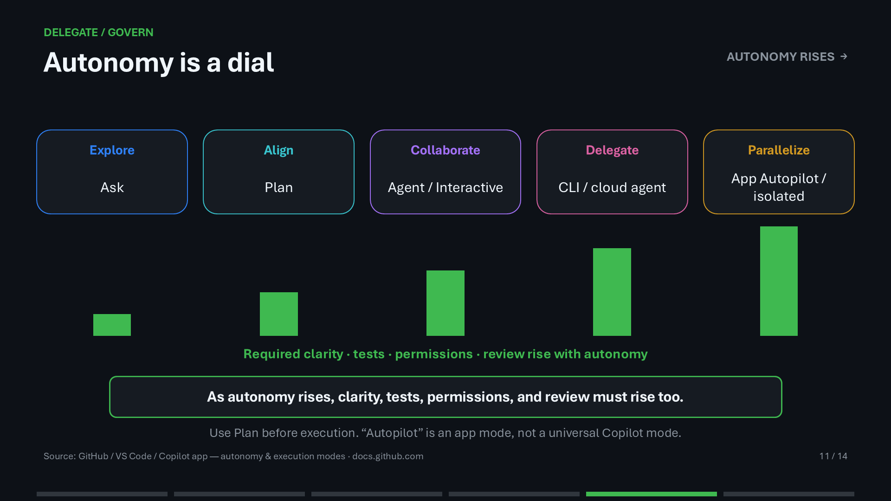
As autonomy rises, task clarity, tests, permissions, and review must rise with it.
GitHub is the control plane
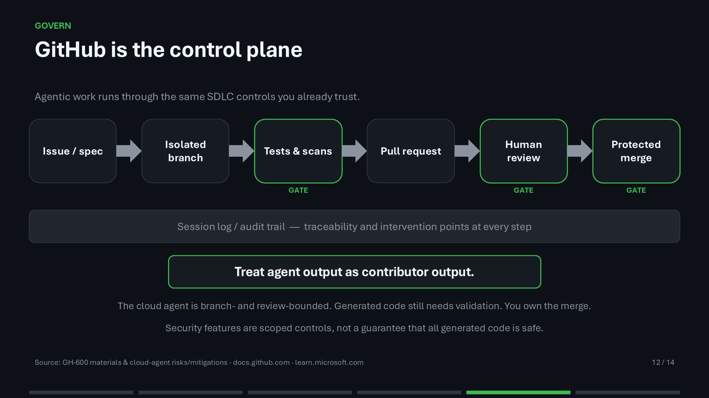
Agentic work should pass through the same software delivery controls used for human contributors.
Agentic Engineering with Spec Kit
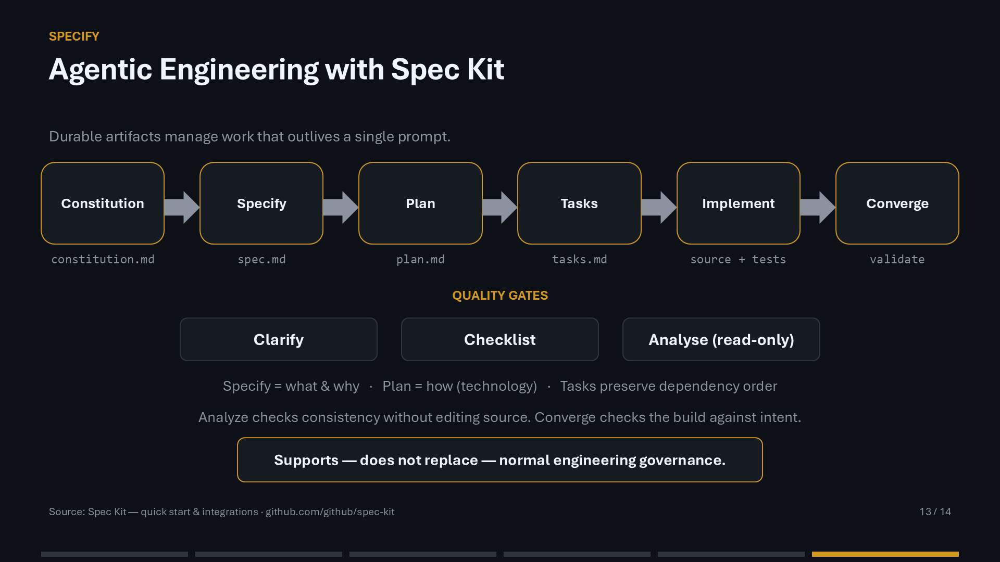
Durable specification artifacts coordinate work that outlives a single prompt while preserving quality gates.
Your homework
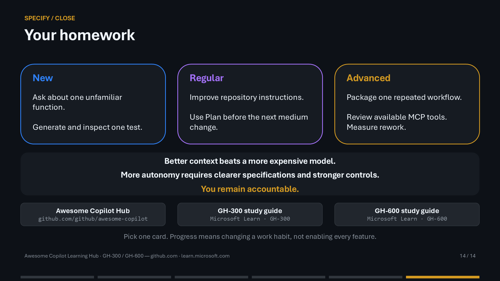
Better context beats a more expensive model, greater autonomy needs stronger controls, and users remain accountable.